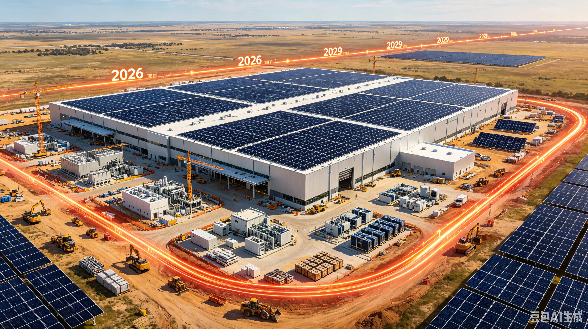

PLAN 01 · ENERGYSolar + Storage Infrastructure
PROJECT DEVELOPMENT
Distributed Clean Power
Evaluate solar generation and battery storage configurations that can provide reliable, measurable energy for future infrastructure sites.
PLANNED DEVELOPMENTNEWS & DEVELOPMENT
Development priorities, planned projects, technology direction, partnership themes and company updates from TerraHash Energy.
PLANNED DEVELOPMENT PROJECTS
TerraHash Energy is developing a phased portfolio across clean energy, distributed infrastructure and digital transparency. The projects below describe strategic development priorities and are not statements that a project has already been financed, contracted or commissioned.

Evaluate solar generation and battery storage configurations that can provide reliable, measurable energy for future infrastructure sites.
PLANNED DEVELOPMENTExplore intelligent charging infrastructure connected to renewable generation, storage and site-level energy management.
PLANNED DEVELOPMENTDevelop a framework for monitoring building energy systems, equipment performance and sustainability-related operating data.
PLANNED DEVELOPMENTAssess locations where renewable power, storage, connectivity and computing demand can be integrated into efficient operating environments.
SITE EVALUATIONBuild digital tools for asset records, energy telemetry, operating metrics and verification-ready reporting.
PRODUCT ROADMAPBring together project developers, technology providers, capital partners and infrastructure operators around suitable opportunities.
PARTNERSHIP ROADMAPDEVELOPMENT UPDATES
Our development strategy starts with clean power and storage. The objective is to create a dependable energy foundation that can support future computing, mobility and smart-building applications.
Explore Energy Solutions →TerraHash is evaluating infrastructure models that place computing demand closer to renewable power resources, with storage and operating data integrated from the beginning.
Explore Compute Infrastructure →We plan to connect asset telemetry, energy production, equipment status and project records into a common digital information layer designed for clearer reporting and verification.
Explore the Digital Layer →As projects mature, TerraHash intends to engage qualified angel investors, strategic investors, family offices and institutional infrastructure partners where appropriate.
Investor Relations →STRATEGIC FOCUS
Develop the energy foundation required for resilient infrastructure, with an emphasis on efficient power utilization and scalable project design.
Explore digital infrastructure that can operate alongside renewable generation and storage, creating a closer relationship between energy supply and compute demand.
Build a common information layer for energy assets, market conditions, project reporting and decision support.
Develop relationships with project developers, technology providers, angel investors, strategic capital and infrastructure-focused investors.
Evaluate opportunities where renewable resources, infrastructure demand, project economics and regulatory conditions support disciplined expansion.
Prioritize technical validation, financial discipline, appropriate diligence and governance before moving from concept to larger deployment.
DEVELOPMENT SEQUENCE
Identify energy resources, project opportunities, infrastructure requirements and strategic partners.
Connect renewable power, storage and digital infrastructure into repeatable operating models.
Deploy monitoring, analytics and market intelligence to improve project visibility and operational decisions.
Engage qualified investors and strategic partners as projects mature and capital requirements become clearer.
Scale selectively across projects and geographies based on validated performance, economics and regulatory readiness.
PARTNERSHIP UPDATES
Future company announcements may cover project agreements, technology partnerships, capital relationships, acquisitions or other material developments. Confirmed transactions will be distinguished from forward-looking plans.